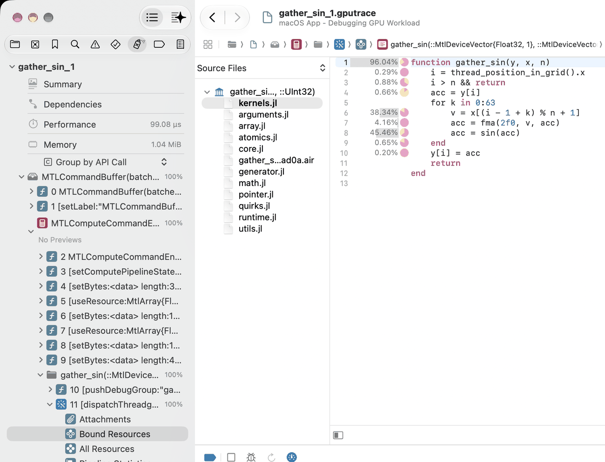
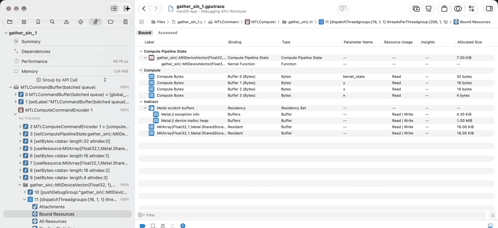
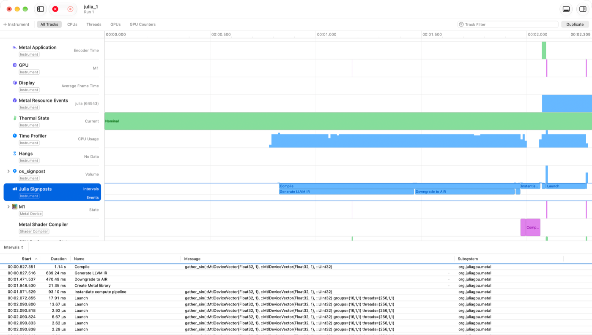

Debugging and profiling with Xcode and Instruments
Apple's developer tools can show a lot about Julia GPU code: which line of a kernel takes the time, what the GPU and the CPU do over the course of a program, and which buffers a kernel was given. This page shows how to get there with Metal.jl, starting from a kernel in a file.
Two of Apple's tools are useful, both part of Xcode:
- Xcode opens GPU frame captures: recordings of a piece of GPU work, made with
Metal.@capture, that Xcode can replay. It shows every command and its resources, and can profile the captured kernels down to individual lines of their source code. - Instruments records a timeline of a whole program, or of a block of code with
Metal.@profile external=true: when command buffers run on the GPU, what the CPU does in the meantime, and when Metal.jl compiles, launches and waits for kernels.
Metal.jl's integrated profiler (see Profiling) needs neither, and is the quickest way to find out which kernel is slow; Choosing a tool compares the three.
You need macOS with the full Xcode installed, not only the Command Line Tools. To replay and profile a capture, you need the Mac that recorded it, or at least one with the same kind of GPU. This page was written with Xcode 27; buttons and menus may differ in other versions.
Quick start: a per-line profile of a kernel
This section takes a kernel from Julia code to a profile in Xcode that shows, for every line of the kernel, its share of the kernel's GPU time.
1. Put the kernel in a file. Xcode can only show source code that exists on disk, so kernels typed at the REPL won't do. Save the following as kernels.jl in your project's directory:
function gather_sin(y, x, n) i = thread_position_in_grid().x i > n && return acc = y[i] for k in 0:63 v = x[(i - 1 + k) % n + 1] acc = fma(2f0, v, acc) acc = sin(acc) end y[i] = acc returnend2. Start Julia with frame capture enabled. Metal only allows frame capture if the METAL_CAPTURE_ENABLED environment variable is set when the process starts; setting it from within Julia is too late.
$ METAL_CAPTURE_ENABLED=1 julia --project3. Capture a launch of the kernel. Wrap the launch in Metal.@capture:
julia> using Metaljulia> include("kernels.jl");julia> N = 4096; x = MtlArray(rand(Float32, N)); y = MtlArray(rand(Float32, N));julia> Metal.@capture @metal threads=256 groups=cld(N, 256) gather_sin(y, x, UInt32(N))[ Info: GPU frame capture saved to /Users/me/project/gather_sin_1.gputrace; open the resulting trace in Xcode"/Users/me/project/gather_sin_1.gputrace"The trace is saved in the current directory, and named after the kernel.
4. Open the trace in Xcode, and replay it with profiling. Open the trace from a terminal with open gather_sin_1.gputrace, by double-clicking it in Finder, or by passing open=true to Metal.@capture. Xcode shows the date and the machine of the capture, a Replay button, and above it a Profile after replay checkbox. Check it, and click Replay. Xcode runs the captured commands on the GPU again, a few times over while measuring, which takes up to a minute. Afterwards, its Summary page shows the GPU time, and the navigator on the left lists the captured commands.
5. Open the kernel's source. In the navigator, expand the command buffer and then the compute encoder. Each kernel launch is a folder named after the kernel's Julia signature, gather_sin(::MtlDeviceVector{Float32, 1}, ...). Expand it, then expand the dispatchThreadgroups call inside it, and select Bound Resources. In the table, under Compute Pipeline State, double-click the row of type Function. The editor now shows kernels.jl, with each line's share of the kernel's GPU time next to it:

Here, the gather load on line 6 and the sin on line 8 take most of the time. The percentage on the function line is the total of the whole kernel, not a hot spot. The small pie chart next to each percentage breaks the line's time down by the kind of work (hover it for details).
If you replayed without Profile after replay, profile now: click the Profile GPU trace button (a gauge, in the bar between the editor and the debug area at the bottom of the window) and then Profile.
That is all it takes. The rest of this page explains what else a capture shows, how to record timelines with Instruments, and what to do when something doesn't work.
Frame capture in detail
Enabling capture
METAL_CAPTURE_ENABLED=1 has to be in the environment when Julia starts. Without it, Metal.@capture fails with an error saying so. Besides allowing captures, the variable makes Metal.jl add information to the objects it creates in that session, so that captures are easier to read:
- Labels. Buffers backing an
MtlArrayare labelled with the array's type and size, e.g.,MtlArray{Float32,1,Metal.SharedStorage}(dims=(4096,)), and command buffers with where they come from, e.g.MTLCommandBuffer(batched queue). - Debug groups. Every kernel launch is wrapped in a debug group named after the kernel. Metal.jl batches many kernel launches into one command buffer and compute encoder; the debug groups tell them apart.
- Sources. Metal.jl embeds the Julia source files of each kernel in the Metal library it loads, which is what lets Xcode show them. This costs a few milliseconds per kernel when it is first loaded, and makes its library a few tens of kilobytes larger. Kernels are not recompiled for it.
Kernels are always labelled with their Julia signature, and Metal.jl's internal buffers with their purpose (e.g., Metal.jl exception info), with or without capture. The generated function itself is named after the Julia function (gather_sin), the same for every specialization of the kernel, unless @metal name=... names it.
Two preferences, set with Preferences.jl or in LocalPreferences.toml, override these defaults. label_resources controls the labels of arrays and command buffers and the debug groups; running Julia with -g2 also enables them. embed_sources controls embedding the sources. For example, to embed sources even without capture enabled:
julia> using Preferences, Metaljulia> set_preferences!(Metal, "embed_sources" => true) # takes effect after a restartRecording a capture
Metal.@capture records all GPU work that the given expression submits to Metal.jl's command queue, and waits for it to finish:
julia> Metal.@capture name="step" begin x .= x .* 2 @metal threads=256 groups=cld(N, 256) gather_sin(y, x, UInt32(N)) endIt saves the trace in the current directory as NAME_N.gputrace. The name is that of the kernel launched with @metal, or of the function called, and julia for anything else (like the block above, had it not set name). N is the first number that doesn't overwrite an existing trace. Metal.@capture returns the path of the trace. Its keyword arguments are:
name: the base name of the trace;open=true: open the trace in Xcode when the capture finishes;object: what to capture: a device, a command queue, or a capture scope. The default, the global command queue, is where Metal.jl submits the work of the current task;dest:MTL.MTLCaptureDestinationGPUTraceDocumentto save a trace (the default), orMTL.MTLCaptureDestinationDeveloperToolsto send the capture straight to Xcode, which only works when Julia was started from Xcode.
Kernels that have not been compiled yet are compiled inside the capture. That does no harm: compilation happens on the CPU and does not show up in the trace.
A trace contains every Metal library and pipeline the process has created so far, not only those of the captured code. Xcode lists the others as unused resources, but they make the trace larger. For a clean trace, capture in a fresh Julia session that runs only what you want to look at. A trace also contains the contents of the buffers that the captured code uses: large arrays make for large traces, and a trace holds your data, so keep that in mind when sharing one.
Finding your way around a capture
After replaying, the navigator on the left lists what the captured code submitted:

- One or more command buffers, labelled
MTLCommandBuffer(batched queue). Metal.jl batches up to 32 kernel launches into one. - Inside, a compute encoder. It holds
setComputePipelineState(which kernel to run),setBytes(the kernel's arguments),useResource(the arrays the kernel uses, by their labels), and a folder (debug group) for each kernel launch, named after the kernel. - In each folder, the
dispatchThreadgroupscall that launches the kernel, with its launch configuration ({16, 1, 1}groups of{256, 1, 1}threads). Expand it to see:- Bound Resources: the kernel's pipeline and function (labelled with the Julia signature), its arguments, and the buffers it can access. The Parameter Name column names the arguments after the kernel's own arguments (
y,x,n), pluskernel_state, which Metal.jl passes to every kernel. Since Metal does not allow labelling arguments, they are called Compute Bytes. - All Resources: every buffer, library and pipeline in the trace;
- Pipeline Statistics: instruction counts and other statistics of the compiled kernel;
- Performance (after profiling): the kernel's GPU time, occupancy, and hardware counters.
- Bound Resources: the kernel's pipeline and function (labelled with the Julia signature), its arguments, and the buffers it can access. The Parameter Name column names the arguments after the kernel's own arguments (
Double-click a row in Bound Resources to see its contents. Arguments are decoded as structs: an array argument such as y shows its device pointer and its shape (4096 here), a scalar like n its value. Array buffers show their elements, as float4 vectors by default; change the format at the bottom of the view, e.g., to float for a Vector{Float32}. The contents are those at the start of the captured work.
Source code and per-line costs
Double-clicking the kernel's function in Bound Resources opens its source. To the left of the editor, a list titled Source Files shows every file that Metal.jl embedded for the kernel: the file that defines it, Metal.jl's own device code (array.jl, math.jl, ...), files of other packages the kernel calls into, and a .air file with the compiled kernel (a binary file, not meant to be read). Click a file to view it.
After profiling, every line that ran shows a percentage of the kernel's GPU time. Some things to keep in mind when reading them:
- Code that the compiler inlined into the kernel, which includes most of Base and Metal.jl, is attributed to the line of the kernel that called it: the cost of
sinshows up on theacc = sin(acc)line. - Functions that are not inlined (e.g.,
@noinlinehelpers) have their own costs in their own file. The line that calls them only shows the cost of the call. - Metal.jl's files show percentages too, but some of them land on lines that are not code (such as a comment): these are inlined functions whose location is recorded imprecisely. Read per-line costs in the kernel's own file.
- The popup above the file list switches to a Call Stack view: a tree of the kernel and the functions it called, with their share of the time. Selecting a function opens its source. Xcode names every function in this tree after the kernel (
gather_sin), also the functions it inlined, so expect to click through them. To break the time down into inlined functions, Xcode recompiles the kernel's embedded AIR with Apple's Metal toolchain; if the tree only shows the kernel itself, check that the toolchain is installed (xcodebuild -downloadComponent MetalToolchain).
Xcode can only profile one trace at a time; with several traces open, it may report "no profiling data found".
Timeline profiling with Instruments
Instruments records what happens over time: when command buffers run on the GPU, what each CPU thread does, and when Metal.jl compiles, launches and waits for kernels. That makes it the tool to find idle GPU time, compilation stalls, or CPU overhead between kernels. It needs no environment variable.
Instruments traces store the environment variables of the recorded process, which may include API tokens and other secrets. Before sharing a trace, check what it contains (xcrun xctrace export --input NAME.trace --toc prints it), or record a process that was started with a minimal environment, e.g. env -i HOME=$HOME PATH=$PATH julia ....
Recording from Julia
Metal.@profile external=true records the given code with Instruments' Metal System Trace template, by starting xctrace (Instruments' command-line tool) on the running Julia process. Continuing with kernels.jl from the quick start (in a session with or without METAL_CAPTURE_ENABLED):
julia> Metal.@profile external=true begin for i in 1:100 @metal threads=256 groups=cld(N, 256) gather_sin(y, x, UInt32(N)) end end[ Info: System trace saved to /Users/me/project/julia_1.trace; open the resulting trace in Instruments"/Users/me/project/julia_1.trace"Open the trace with open julia_1.trace, or pass open=true. Like Metal.@capture, it takes a name for the trace. template selects another Instruments template (xcrun xctrace list templates lists them). Starting and stopping xctrace takes several seconds, so use it on a block that does a sizeable amount of work. If the block compiles kernels, the compilation is part of the recording. The screenshot below was recorded in a fresh session, so it shows gather_sin being compiled; in the quick start's session, where the kernel is already compiled, the recording only shows the launches. To look at the steady state, run the code once before recording it.
Recording a script
To record a whole script, including package loading and compilation, run Julia under xctrace. For example, with this script.jl next to kernels.jl:
using Metalinclude("kernels.jl")N = 4096; x = MtlArray(rand(Float32, N)); y = MtlArray(rand(Float32, N))for i in 1:100 @metal threads=256 groups=cld(N, 256) gather_sin(y, x, UInt32(N))endsynchronize()record it with:
$ julia --project -e 'using Metal; Metal.OS.instruments_package(["org.juliagpu.metal"]; dir=".")'
$ xcrun xctrace record --template 'Metal System Trace' \
--package Julia.instrdst --instrument 'Julia Signposts' \
--output script.trace --launch -- $(which julia) --project script.jl
$ open script.traceThe first line builds an Instruments package, Julia.instrdst in the current directory (next to its source, Julia.instrpkg), with a Julia Signposts instrument that records Metal.jl's signposts (subsystem org.juliagpu.metal, see below) and makes Metal.jl emit them. Without the --package and --instrument options, the trace has no signposts of Metal.jl. xctrace needs the full path of the executable, hence $(which julia). To record a session that is already running, replace --launch -- ... by --attach PID (getpid() in Julia gives the PID), and stop the recording with Ctrl-C.
Reading the timeline
When Instruments opens a trace, the timeline may be zoomed out far beyond the recording; choose View > Zoom > Zoom to Fit. Metal.jl's signposts are on the Julia Signposts track. Select the track to list its intervals, with their messages, in the detail area at the bottom, as in this screenshot:

This recording, of the Metal.@profile external=true example above, shows from top to bottom, among others:
Metal Application: when the process encoded and committed command buffers.
GPU: when command buffers ran on the GPU. Metal.jl batches kernel launches, so an interval here is a batch of up to 32 kernels, not a single kernel. With labels enabled (see Enabling capture), they are called
MTLCommandBuffer(batched queue), otherwiseCommand Buffer 0,1, ...Time Profiler: CPU usage of the process. Select a time range to list the hottest Julia functions in it in the detail area at the bottom. Here, the CPU is busy compiling the kernel for most of the recording.
os_signpost: all signposts in the system. Expand it, then its
org.juliagpu.metalsubsystem, to see Metal.jl's signposts again, split by category. Only recordings ofMetal.@profile external=true, or with--instrument os_signpost, have this track.Julia Signposts: Metal.jl's signposts. They come in two categories, which the os_signpost track shows separately:
- Compiler: a Compile interval for every kernel compilation, with the kernel's Julia signature, containing Generate LLVM IR, Downgrade to AIR and Create Metal library; and Instantiate compute pipeline when a compiled kernel is loaded onto the GPU, also for kernels compiled earlier (e.g., during precompilation).
- DynamicTracing: a Launch interval for every kernel launch, with the kernel's signature,
groupsandthreads. It covers the CPU's work to submit the kernel, not the kernel's execution, which shows on the GPU track. And Wait for GPU when a task waits for the GPU to finish (synchronize, or copying an array to the CPU), but only if the GPU was not done yet.
An interval whose end message is
errorfailed. The menu at the top left of the detail area switches between the list of intervals, the list of events, and a summary of the intervals by name.Metal Shader Compiler: when Apple's compiler turned the kernel into GPU code.
Instruments names kernels after their Julia function, e.g., gather_sin, the same for every specialization of a kernel. Metal.jl's Launch signposts and the pipeline labels give the full Julia signature. Instruments records the whole system, so some tracks also show the GPU work of other processes. That includes the Julia Signposts track: it shows the signposts of every Julia process that uses Metal.jl during the recording, without telling them apart, so stop other such sessions (e.g., test runs) before recording. In a recording of a script, the script's own intervals come last, after Julia has loaded Metal.jl.
Adding your own signposts
To mark phases of your own code in the timeline, add signposts with ObjectiveC.jl, much like NVTX ranges in CUDA.jl:
julia> using ObjectiveC, .OS # add ObjectiveC.jl to your environment firstjulia> Metal.@profile external=true open=true begin @signpost_interval "Time step" begin @metal threads=256 groups=cld(N, 256) gather_sin(y, x, UInt32(N)) @signpost_event "Checkpoint" synchronize() end endThey need the os_signpost instrument in the recording, which Metal.@profile external=true includes (add --instrument os_signpost to the xctrace command above), and show up in the os_signpost track next to Metal.jl's. Instruments only shows the name of a signpost if it is a string literal in a package (code that is precompiled). Signposts from the REPL or a script are all called Julia, with their name in the message (Time step: start, Time step: stop, Checkpoint), and are listed under an uninformative subsystem name.
Signposts on the default logger are emitted even when nothing is recording, which costs a little. For signposts on hot code paths, create a logger with OSLog("com.example.MyPackage", OS.CATEGORY_DYNAMIC_TRACING): its signposts are only emitted while an instrument asks for them. Build an instrument for both with OS.instruments_package(["org.juliagpu.metal", "com.example.MyPackage"]; dir="."), and pass it to xctrace as above. See the docstrings of @signpost_interval and @signpost_event for more, e.g., how to add a message to a signpost.
Exporting data
xctrace export turns a trace into XML, for use in scripts:
$ xcrun xctrace export --input script.trace --toc
$ xcrun xctrace export --input script.trace \
--xpath '/trace-toc/run[@number="1"]/data/table[@schema="os-signpost"]'The table of contents lists the tables in the trace. Useful ones are metal-gpu-intervals (GPU work), julia-signpost-interval (Metal.jl's signposts, as on the Julia Signposts track), os-signpost (all signposts) and time-profile (CPU samples).
Choosing a tool
| Question | Tool |
|---|---|
| Which operation takes the GPU time? How often is it called, and how much CPU time goes to Metal API calls? | Metal.@profile (integrated profiler) |
| Is the GPU idle at times? Where does the CPU time go between kernels? When are kernels compiled? | Instruments: Metal.@profile external=true, or xctrace |
| Which lines of this kernel are slow? Which buffers and arguments does it get, with which launch configuration? | Xcode: Metal.@capture |
A good order is: the integrated profiler first, as it is quick and names the operations that take the most time; Instruments when the problem lies in the timeline (gaps, stalls, overhead); and a frame capture to dig into one kernel. The integrated profiler only sees work that Metal.jl submits itself; Instruments and frame captures also show work submitted by Metal Performance Shaders and MPSGraph (e.g., matrix multiplications).
Limitations
- No stepping through kernels. Xcode's shader debugger recompiles shaders from Metal Shading Language source, which Julia kernels don't have. Debugging a dispatch, inspecting variables, and editing and reloading shaders in Xcode are therefore not supported. Only line information is recorded.
- Xcode highlights Julia code as if it were Metal Shading Language.
- Only files on disk are embedded: kernels defined at the REPL show no source, and neither do functions of Julia's
Base(whose costs show on the calling line). - Running Julia with
-g0removes the line information, and with it the sources and per-line costs. - Source files are read when a kernel is first loaded. If a file changed after the kernel was compiled (e.g., when using Revise), the lines Xcode shows may not match the code that ran.
- The call stack in Xcode names functions inlined into a kernel after the kernel.
Troubleshooting
"GPU frame capture is not enabled": restart Julia with METAL_CAPTURE_ENABLED=1 in the environment. Setting ENV["METAL_CAPTURE_ENABLED"] within Julia has no effect.
"Shader source not found" in Xcode, when opening a kernel's function: the kernel's library has no embedded sources, or doesn't contain the kernel's file. Check that:
- capture was enabled when the kernel was first launched in the session (or the
embed_sourcespreference istrue), and the preference is not set tofalse; - the kernel is defined in a file, not at the REPL;
- Julia did not run with
-g0; - the kernel's file is smaller than 1 MiB: Metal.jl leaves out larger files.
The Import Sources button of the alert opens a dialog that lists the libraries in the trace: a library with embedded sources is marked Archived, one without No Source.
Xcode shows binary garbage, or another file than the kernel's: Xcode didn't find the kernel's file in the archive, and opened the .air file or another embedded file instead. Click the kernel's file in the Source Files list.
No percentages next to the source: the trace was replayed without profiling; click the Profile GPU trace button, then Profile.
"no profiling data found": close other traces and profile one trace at a time, on the machine that recorded it.
"Capture manager is already capturing": an earlier capture did not finish, e.g. because it was interrupted. Restart Julia.
"Logging is not supported while GPU frame capturing": kernels that print (@mtlprintf and friends) can't be launched during a capture.
"xctrace is not available": install Xcode and select it with xcode-select.
"xctrace failed to start recording": xctrace exited before it started recording, e.g. because of an unknown template name. Run the xctrace record command from Recording a script by hand to see its output.
Metal.jl's signposts are missing from an Instruments trace: the recording lacks the Julia Signposts instrument (see Recording a script).
API
Metal.@capture — Macro
Metal.@capture [kwargs...] exAnalyze GPU work using Metal's GPU frame capture capabilities.
Running under Metal.@capture generates a replayable trace of the GPU work performed by the given expression. The resulting trace can be opened in Xcode, and offers detailed information about the GPU work, and how to improve the performance of individual operations. For a higher-level overview of the GPU work, use Metal.@profile instead.
The trace is saved in the current directory as NAME_N.gputrace, where NAME defaults to the name of the kernel launched by @metal (or of the function called) in ex, and N is the first number that does not overwrite an existing trace. The path of the trace is returned.
Metal frame capture must be enabled by setting the METAL_CAPTURE_ENABLED environment variable to 1 before launching Julia. Setting it from within Julia does not work, as Metal reads it when the process starts.
A trace includes every Metal library and pipeline the process has created so far, not only those used by ex. Xcode lists the ones that ex does not use as unused resources.
Several keyword arguments are supported that influence the behavior of Metal.@capture:
name: the base name of the trace file, instead of the one derived fromex.open: open the trace in Xcode when the capture finishes (default:false).object: the object to capture GPU work on. Can be a MTLDevice, MTLCommandQueue, or MTLCaptureScope. This defaults to the global command queue, and selecting a different capture object may result in no GPU commands detected when viewed from Xcode.dest: the type of GPU frame capture output. Potential values:MTL.MTLCaptureDestinationGPUTraceDocumentfor folder output for later viewing/sharing. (default)MTL.MTLCaptureDestinationDeveloperToolsfor direct Xcode viewing, which requires running Julia from Xcode.
When profiling the resulting gputrace folder in Xcode, do so one at a time to avoid "no profiling data found" errors.
See Debugging and profiling with Xcode and Instruments for what the trace shows of Julia code.